Section 2.1 — Day 1
Calculate the slope of the line through $(1,5)$ and $(4,11)$.
The table shows a relationship. Write the ordered pair for the column where $x=2$.
| $x$ | 0 | 1 | 2 | 3 |
|---|---|---|---|---|
| $y$ | 5 | 7 | 9 | 11 |
Spiral: The line shown models profit after selling items. Identify the break-even point and explain how the graph shows it.

Formative Spiral: Use the diamond. The top number is the product of the two side numbers, and the bottom number is their sum. Fill in the missing cell(s).

Section 2.1 — Day 2
A table shows that $y$ decreases by $6$ whenever $x$ increases by $2$. What is the slope?
For the point $(6,18)$ in a distance graph, which coordinate is the input?
Spiral: Which point is closest to the origin: $({2},{1})$, $(-1,{3})$, or $({4},{0})$? Use coordinate distance in your explanation.
Formative Spiral: Use the diamond. The top number is the product of the two side numbers, and the bottom number is their sum. Fill in the missing cell(s).
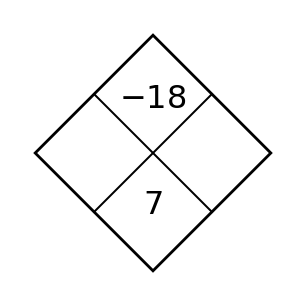
Section 2.1 — Day 3

A gym membership costs \$25 to join and \$15 each month. Write an equation and use it to find the cost after $6$ months.
Spiral: A line passes through $(-2,{0})$ and $({0},{4})$. Find both intercepts and describe what each intercept tells you about the graph.
Formative Spiral: Use the diamond. The top number is the product of the two side numbers, and the bottom number is their sum. Fill in the missing cell(s).
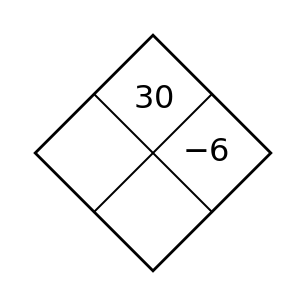
Section 2.2 — Day 1
For $y=2x-5$, identify the slope and $y$-intercept.
Use the graph to estimate the output when the input is $2$.

Spiral: Use the table to write a rule in words and symbols.
| Input | 0 | 1 | 2 | 3 | 4 |
|---|---|---|---|---|---|
| Output | 3 | 7 | 11 | 15 | 19 |
Formative Spiral: Use the diamond. The top number is the product of the two side numbers, and the bottom number is their sum. Fill in the missing cell(s).
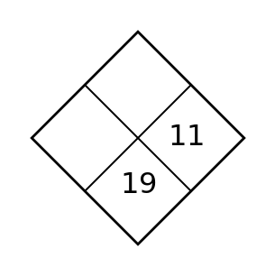
Section 2.2 — Day 2
A graph rises from left to right. State whether the slope is positive, negative, zero, or undefined.
A graph crosses the vertical axis at $7$. What table value does that help you identify?
Spiral: For the rule $y={10}-x$, find the output when $x={4}$.
Formative Spiral: Use the diamond. The top number is the product of the two side numbers, and the bottom number is their sum. Fill in the missing cell(s).
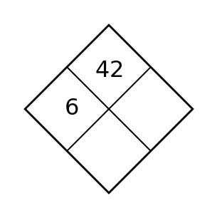
Section 2.2 — Day 3
Write an equation for a relationship whose graph would pass through $(0,9)$ and increase by $4$ in output for every $1$ increase in input.
Spiral: Build a table and ordered pairs for the rule $y={18}-{3}x$ for inputs ${0}$ to ${5}$. Identify the first input with output less than ${5}$.
Formative Spiral: Use the diamond. The top number is the product of the two side numbers, and the bottom number is their sum. Fill in the missing cell(s).
Section 2.3 — Day 1
A line has slope $5$ and $y$-intercept $-2$. Write the equation.
In the phrase "temperature depends on time," which quantity is the input?
Spiral: Compare Graph A and Graph B. Which has the greater rate of change? Use steepness and one numerical feature.

Formative Spiral: Use the diamond. The top number is the product of the two side numbers, and the bottom number is their sum. Fill in the missing cell(s).

Section 2.3 — Day 2
State the slope of the line $y=12$.
If a rule gives output $0$ for input $-3$, write the ordered pair.
Spiral: A graph is a straight line rising from left to right. Is its rate of change positive, negative, or zero?
Formative Spiral: Use the diamond. The top number is the product of the two side numbers, and the bottom number is their sum. Fill in the missing cell(s).
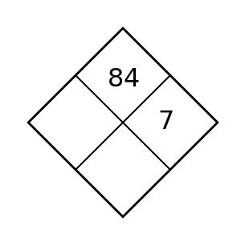
Section 2.3 — Day 3
A temperature starts at $68$ degrees and drops $2$ degrees each hour. Write a linear model and use it to predict the temperature after $9$ hours.
Use the graph of $f$ to estimate $f(-2)$ and the input where the output is $1$.

Spiral: A graph begins at $({0},{8})$ and passes through $({3},{20})$. Find the rate of change and predict the output at $x={6}$.
Formative Spiral: Use the diamond. The top number is the product of the two side numbers, and the bottom number is their sum. Fill in the missing cell(s).
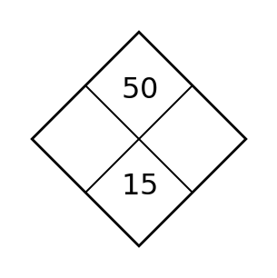
Section 2.4 — Day 1
A table increases by $12$ for every $3$ in $x$. What slope should be used to compare it with an equation?
For $r(x)=|x-5|$, find $r(5)$.
Spiral: Use the table to write a linear equation.
| $x$ | 0 | 1 | 2 | 3 | 4 |
|---|---|---|---|---|---|
| $y$ | 6 | 9 | 12 | 15 | 18 |
Formative Spiral: Use the diamond. The top number is the product of the two side numbers, and the bottom number is their sum. Fill in the missing cell(s).
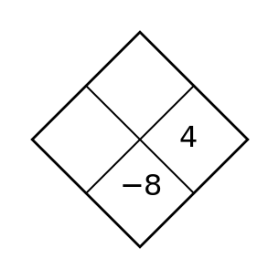
Section 2.4 — Day 2
| $x$ | 0 | 1 | 2 |
|---|---|---|---|
| $y$ | 10 | 13 | 16 |
Identify the slope and starting value so this table can be compared with an equation.
For $q(x)=3x$, what input produces output $18$?
Spiral: A pattern starts at ${9}$ and changes by $-{2}$ each step. Name the starting value and the rate of change.
Formative Spiral: Use the diamond. The top number is the product of the two side numbers, and the bottom number is their sum. Fill in the missing cell(s).
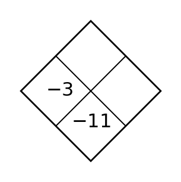
Section 2.4 — Day 3
Compare $y=\frac{5}{2}x-1$ with a relationship that passes through $(0,3)$ and $(4,13)$. Which has the larger slope?
The table shows a relation. If possible, write a rule using $x$ and $y$. If not possible, explain what prevents one rule from working for the repeated input.
| $x$ | 0 | 1 | 2 | 2 |
|---|---|---|---|---|
| $y$ | 3 | 5 | 7 | 9 |
Spiral: A line starts at ${30}$ and decreases by ${5}$ for every input step. Write the equation, complete four table rows, and identify when the output reaches ${0}$.
Formative Spiral: Use the diamond. The top number is the product of the two side numbers, and the bottom number is their sum. Fill in the missing cell(s).
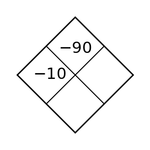
Section 2.5 — Day 1
State whether a scatter plot that rises from left to right shows positive association, negative association, or no association.
A table has outputs $3,6,12,24$ as inputs increase by $1$. Which family is most likely: linear, quadratic, exponential, or absolute value?
Spiral: Use the table to decide which relationship has the greater rate of change. Explain your calculation.
| $x$ | 0 | 1 | 2 | 3 |
|---|---|---|---|---|
| A | 4 | 7 | 10 | 13 |
| B | 1 | 6 | 11 | 16 |
Formative Spiral: Use the diamond. The top number is the product of the two side numbers, and the bottom number is their sum. Fill in the missing cell(s).
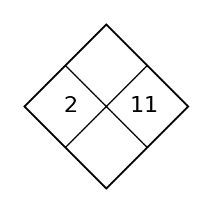
Section 2.5 — Day 2
State one reason a linear model might not be appropriate for a data set.
What family often has a graph shaped like a V?
Spiral: A graph crosses the vertical axis at ${4}$ and rises ${2}$ for every run of ${1}$. Write the matching linear equation.
Formative Spiral: Use the diamond. The top number is the product of the two side numbers, and the bottom number is their sum. Fill in the missing cell(s).
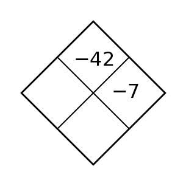
Section 2.5 — Day 3
| Year after 2020 | 0 | 1 | 2 | 3 | 4 |
|---|---|---|---|---|---|
| Members | 120 | 132 | 143 | 156 | 169 |
Write a rough linear model and interpret the slope.
Use equation structure to identify the family and one key feature for $y=-2|x+3|+5$.
Spiral: A tile pattern rule is $T={4}n+7$. A points rule is $P={2}n+19$. Compare the values at $n={0}$ and $n={8}$, then describe what changed.
Formative Spiral: Use the diamond. The top number is the product of the two side numbers, and the bottom number is their sum. Fill in the missing cell(s).